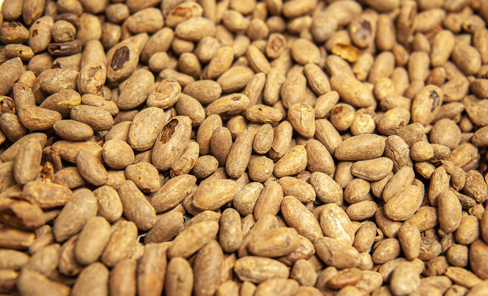
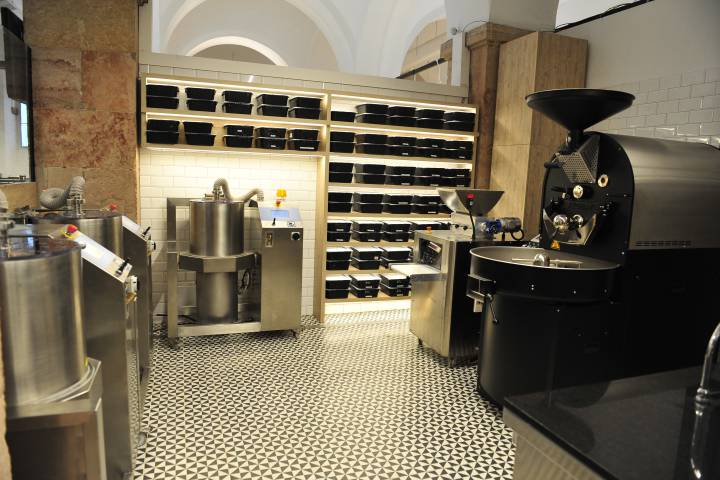
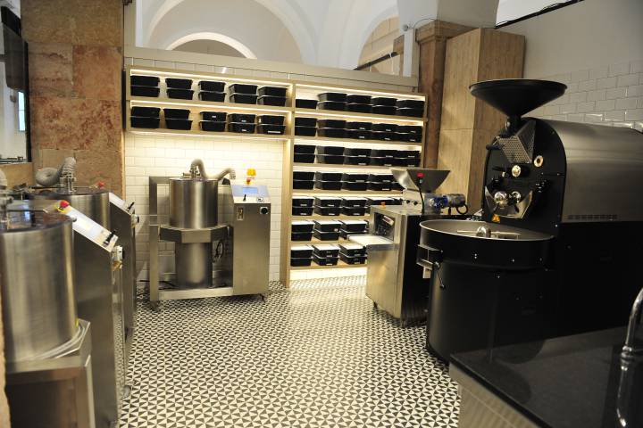

El chocolate exprime el sabor del cacao
Pequeños chocolateros fomentan la elaboración artesana con cacao de origen denominada ‘bean to bar’
De plantaciones de cacao hay muchas, pero de cacao de calidad no tantas. Cómo pasa con otros productos, la industria ha primado la cantidad a expensas de la calidad y ha acabado homogeneizando el cacao, y consecuentemente el chocolate, como un producto de gusto parecido, donde predomina el sabor de añadidos como la lecitina y la vainilla, en lugar de las notas del origen del cacao. Pero cómo ha pasado con otros alimentos, ya sea el café, el vino, la cerveza o el aceite, el chocolate también se ha cruzado con apasionados que quieren recuperar su sabor y ofrecer un producto de más calidad con el grano procedente de pequeñas plantaciones, que dan como resultado chocolates que exprimen el sabor del cacao, donde se manifiestan diferentes matices en función de la variedad y el origen de este alimento de los dioses, sagrado para mayas y aztecas. 
El chocolate está viviendo un momento dulce, pero nada empalagoso, sino al contrario. Los elaboradores de chocolate artesano conocido como bean to bar, anglicismo que quiere decir de la haba a la tableta, suelen poner un mínimo de 70% de cacao. Lo que caracteriza esta forma de hacer chocolate, que no deja de ser un retorno a la elaboración tradicional, es que los chocolateros tuestan el cacao procedente de pequeñas plantaciones, con las que mantienen una transacción comercial ética, y cuidan todo el proceso de elaboración hasta que el licor de cacao se moldea en forma de barra, para obtener un producto de máxima calidad. Este chocolate solo lleva cacao y azúcar, sin añadidos industriales como lecitina o vainilla. En los lineales de los supermercados de Estados Unidos ver barras bean to bar es habitual desde hace unos años, explica Olivier Fernández, director de la Escuela de Pastelería del Gremio de Barcelona, que pronostica que en uno o dos años, todo el mundo conocerá aquí qué es este tipo de chocolate y surgirán más marcas para satisfacer a los consumidores más exigentes, que entenderán que el precio medio de una barra con esta trazabilidad esté entre los 6 y 8 euros. No tiene nada que ver con un chocolate industrial, la principal diferencia es el origen del cacao, procedente de pequeñas plantaciones familiares, y sin las mezclas habituales que hacen los grandes distribuidores.
Fernández es el artífice del nuevo espacio bean to bar del Museo del Chocolate de Barcelona, un obrador
con grandes ventanales donde se elabora el chocolate a la vista de los visitantes. Este espacio quiere
“generar cultura del cacao”, cuenta Fernández, con un producto que se compra directamente a pequeños
productores para finalizar el proceso “respetando el sabor original del chocolate”. En la primera cata,
los nuevos consumidores se sorprenden de los sabores diferentes que desprenden estas tabletas.
 El trabajo que se hace en este espacio es artesanal y lento. Después de recibir el cacao, se selecciona
para desestimar las habas que no están en buen estado. Después se tuestan a una temperatura baja (entre
115 y 125ºC), para evitar tener que añadirle mucho azúcar y dejar que se liberen los aromas del cacao.
Una vez las habas están peladas, minimizando la pérdida de nib, se trituran y se obtiene el licor del
cacao, que pasa por una conchadora diseñada a medida. Entonces se le añade el azúcar, un máximo del 26%,
y se deja enfriar. El cacao se deja madurar tres días para que se formen los polifenoles y todos los
sabores se sitúen. Después se vuelve a calentar para poder amoldar el chocolate.

El trabajo que se hace en este espacio es artesanal y lento. Después de recibir el cacao, se selecciona
para desestimar las habas que no están en buen estado. Después se tuestan a una temperatura baja (entre
115 y 125ºC), para evitar tener que añadirle mucho azúcar y dejar que se liberen los aromas del cacao.
Una vez las habas están peladas, minimizando la pérdida de nib, se trituran y se obtiene el licor del
cacao, que pasa por una conchadora diseñada a medida. Entonces se le añade el azúcar, un máximo del 26%,
y se deja enfriar. El cacao se deja madurar tres días para que se formen los polifenoles y todos los
sabores se sitúen. Después se vuelve a calentar para poder amoldar el chocolate.

De momento, el chocolate bean to bar by MXBCN se elabora con cacaos ecológicos y orgánicos de pequeños
productores de República Dominica, Nueva Guinea, Madagascar, Tanzania, El Salvador y Ghana. Como se
compran pequeñas partidas (de 240 kilos), Fernández explica que pueden “seleccionar el cacao en origen y
pagar mejor al productor”, que conoce y tiene las garantías de un buen producto y que está libre de
ningún tipo de explotación laboral”.
Explosión de sabores
El chocolate bean to bar tiene poco que ver con el industrial. El sabor varía en función del país de
origen del cacao y de la variedad. Se trata de un producto gurmet, que también cuida al detalle el
embalaje y la presentación. A menudo se dice que cuando se prueba el bean to bar ya no se puede volver
atrás, porque el chocolate industrial pierde todos los matices de los sabores. Además, el cacao no es
tan amargo como nos parece, muchas veces el sabor amargo se acentúa por una tostado a demasiada
temperatura.
 Aún es incipiente, pero hay varios pequeños elaboradores que se han lanzado a hacer bean to bar. Es el
caso de Xavi Palau, leridano que creó la marca comercial Pangea en 2016 después de descubrir el bean to
bar a través de internet y probar de hacer chocolate de forma autodidacta, siguiendo tutoriales de la
red. “El bean to bar es elaborar el chocolate a partir de habas de calidad”, explica. La mayoría de
chocolates se hacen a partir de una cobertura, es decir, de ”una pasta de cacao comprada a una
compañía”, que muchas veces mezcla cacaos de diferente procedencias perdiendo la calidad y la
singularidad del alimento.
Con Pangea, Palau busca “variedades originales con buen sabor” y a partir de esto hace todo el proceso
de elaboración de forma artesanal. Como es un productor pequeño, que compra sacos de cacao de entre 50 y
70 kilos, lo compra directamente a productores o pequeñas cooperativas. Sus chocolates, que vende en
línea, en ferias y en algunas tiendas especializadas como El club del chocolate, han sido premiadas en
concursos internacionales como Inetrnational Chocolate Awards.
Aún es incipiente, pero hay varios pequeños elaboradores que se han lanzado a hacer bean to bar. Es el
caso de Xavi Palau, leridano que creó la marca comercial Pangea en 2016 después de descubrir el bean to
bar a través de internet y probar de hacer chocolate de forma autodidacta, siguiendo tutoriales de la
red. “El bean to bar es elaborar el chocolate a partir de habas de calidad”, explica. La mayoría de
chocolates se hacen a partir de una cobertura, es decir, de ”una pasta de cacao comprada a una
compañía”, que muchas veces mezcla cacaos de diferente procedencias perdiendo la calidad y la
singularidad del alimento.
Con Pangea, Palau busca “variedades originales con buen sabor” y a partir de esto hace todo el proceso
de elaboración de forma artesanal. Como es un productor pequeño, que compra sacos de cacao de entre 50 y
70 kilos, lo compra directamente a productores o pequeñas cooperativas. Sus chocolates, que vende en
línea, en ferias y en algunas tiendas especializadas como El club del chocolate, han sido premiadas en
concursos internacionales como Inetrnational Chocolate Awards.
En España, hay otros pequeños elaboradores que hacen chocolate de esta forma purista, como Utopick en
Valencia, Kaitxo en Bilbao, Chocolate Artesano Isabel de Teruel, Kankel Cacao en La Rioja o Puchero de
Valladolid. Precisamente, hace poco que se han unido para crear una asociación que defienda sus
intereses, la Asociación para el Fomento del Chocolate Bean to bar de Tueste Artesano en España, una
entidad con un nombre muy largo que pretende incluir todos los matices de este modo de elaborar el
chocolate. Su presidenta, Victoria de la Torre, explica que “es un movimiento de retorno al origen, que
valora el cacao bueno y de calidad”. Pretenden que en un futuro, todos aquellos chocolates que incluyan
bean to bar en la etiqueta sean realmente elaborados desde la haba hasta la barra de forma artesanal a
partir de pequeños lotes de cacao tostados también de forma artesana y con una transacción ética entre
productores y compradores. Para ello, quieren “buscar una forma legal para dar la información correcta
al consumidor”, añade, y hace el símil con los cerdos ibéricos para que “la gente entienda qué quiere
decir”.
 Joan Baixas, de la pastelería Baixas, se introdujo en el mundo del cacao a raíz de viajar a Ecuador y en
Perú y vio la oportunidad de ofrecer cacao de calidad a pequeños productores. A través de la empresa
Amazing Chocolate importa y distribuye granos de cacao y derivados de origen de alta calidad. “Los bean
to bareros tenían un problema al comprar cantidades pequeñas”, explica, y él ofrece cacao de Colombia,
Perú y Ecuador a pequeños productores. “Partimos de cero, así que el movimiento irá a más en los
próximos años”, defiende, y pone en valor las “calidades organolépticas tan especiales de las pequeñas
plantaciones, que generalmente son orgánicas, aunque no tengan sellos”. El valor de este chocolate es
que “se llega a acuerdos para pagar de forma justa a los productores”, añade, de forma que los
agricultores pueden “seguir haciendo buen cacao y vivir dignamente”. Es un movimiento “con una parte más
humanista”, aclara.
Próximamente, los hermanos Roca, con Jordi Roca al frente, abrirán el espacio Casa Cacao en Girona, un
obrador de chocolates de calidad que también tendrá un hotel. Seguro que contribuirá a la difusión de
este retorno al chocolate artesano con denominación de origen.
Joan Baixas, de la pastelería Baixas, se introdujo en el mundo del cacao a raíz de viajar a Ecuador y en
Perú y vio la oportunidad de ofrecer cacao de calidad a pequeños productores. A través de la empresa
Amazing Chocolate importa y distribuye granos de cacao y derivados de origen de alta calidad. “Los bean
to bareros tenían un problema al comprar cantidades pequeñas”, explica, y él ofrece cacao de Colombia,
Perú y Ecuador a pequeños productores. “Partimos de cero, así que el movimiento irá a más en los
próximos años”, defiende, y pone en valor las “calidades organolépticas tan especiales de las pequeñas
plantaciones, que generalmente son orgánicas, aunque no tengan sellos”. El valor de este chocolate es
que “se llega a acuerdos para pagar de forma justa a los productores”, añade, de forma que los
agricultores pueden “seguir haciendo buen cacao y vivir dignamente”. Es un movimiento “con una parte más
humanista”, aclara.
Próximamente, los hermanos Roca, con Jordi Roca al frente, abrirán el espacio Casa Cacao en Girona, un
obrador de chocolates de calidad que también tendrá un hotel. Seguro que contribuirá a la difusión de
este retorno al chocolate artesano con denominación de origen.